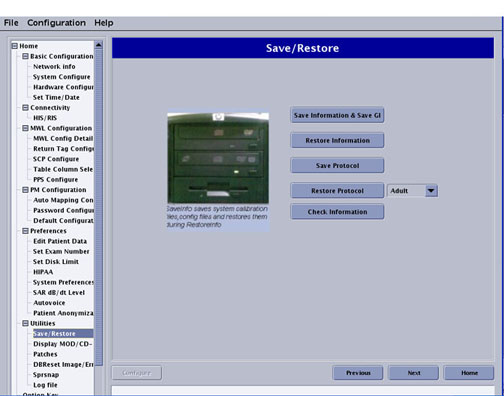

Operating Documentation
Direction 5500113, Rev# 3
Discovery MR750 3.0T Service Methods
Module Version 5.0, Version Date 8/19/08
Operating Documentation |
| Required Persons | Preliminary Reqs | Procedure | Finalization |
|---|---|---|---|
| 1 | Not Applicable | 25 mins | Not Applicable |
When performing service engineering functions, it may be necessary to save the current configurations and files in order to replace them later. This document provides instructions for using the Guided Install interface to save and verify the system data.
| Item | Qty | Effectivity | Part# | Manufacturer |
|---|---|---|---|---|
| CD or DVD (CD-R or DVD-R) | 1 | - | - | - |
Launch the Guided Install.
In the left navigation pane, expand Utilities and select SaveRestore.
Illustration 1: Save/Restore Tool

Click [Save Information & Save GI].
Insert the media you want to use.
| NOTE: | Disk users should use Verbatim or TDK 48× CD-R or Verbatim or TDK 2× DVD-R media. |
| NOTE: | The MOD option appears if it is connected to the system. If not, the system will prompt to save information on a CD/DVD. |
In the Dialog window, select the media type, and then click [OK].
Illustration 2: Dialog Window

Do not select the MOD drive if your system does not have MOD capabilities. Any previously saved data on a MOD will be erased.
If media cannot be found, an error message displays. Verify that your media is in the drive and click [Retry].
Once SaveInfo creation begins, a progress message displays.
Illustration 3: Message Window

If some information is not saved a warning message will display.
Illustration 4: Message Window
The warning indicates failure to save certain files. Even in cases where the warning displays, the SaveInfo was successfully saved.
Click [Yes] to view the Log.
Illustration 5: Example of Warning Log

| NOTE: | The SaveInfo has been saved without the files listed in
the Warning log. Protocols may fail to save if an illegal character is used in the name. |
Once the SaveInfo is complete, remove the media and write the date and time on it.
There is no reason to perform a CheckInfo once a SaveInfo has completed successfully. A CheckInfo was automatically performed as part of the SaveInfo process.
From the Save/Restore screen, click [Check Information]. See Illustration 1.
Insert the SaveInfo media into the drive.
In the Dialog window, select the media type, and then click [OK].
| NOTE: | The MOD option appears if it is connected to the system. If not, the system will prompt to save information on a CD/DVD. |
Illustration 6: Media Dialog Box

The tool will begin comparison of the data on the media source with that of the data on the hard drive.
If media cannot be found, an error message displays. Verify that your media is in the drive and click [Retry].
While the media is being checked, the verification progress message displays. The verification run takes about two (2) minutes.
Illustration 7: Verification Progress Message

Once verification is complete, when the system asks if you want to view the log, Click [Yes].
Illustration 8: Checkinfo Log Review Message

A log like the example in Illustration 9 displays.
Illustration 9: Verification Log

If errors are reported, assume the SaveInfo failed and repeat the process.
Perform a test scan to ensure proper operation before turning the system over to the customer. Store the Save/Restore media file in a safe place.